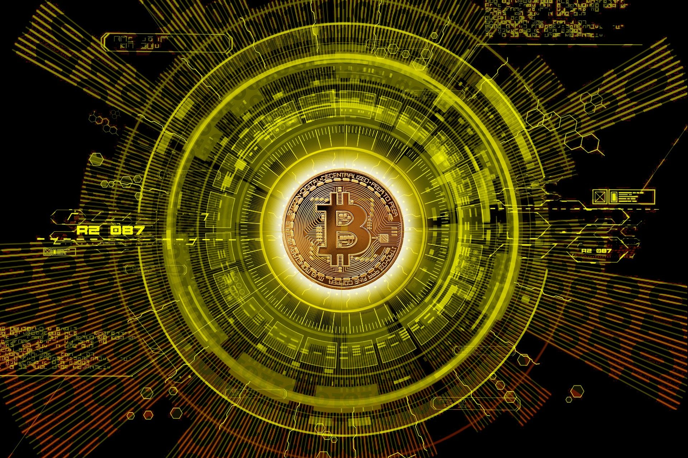
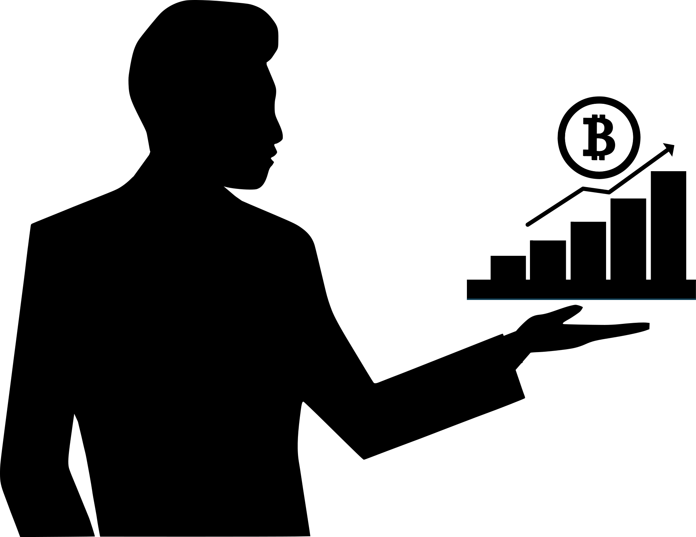
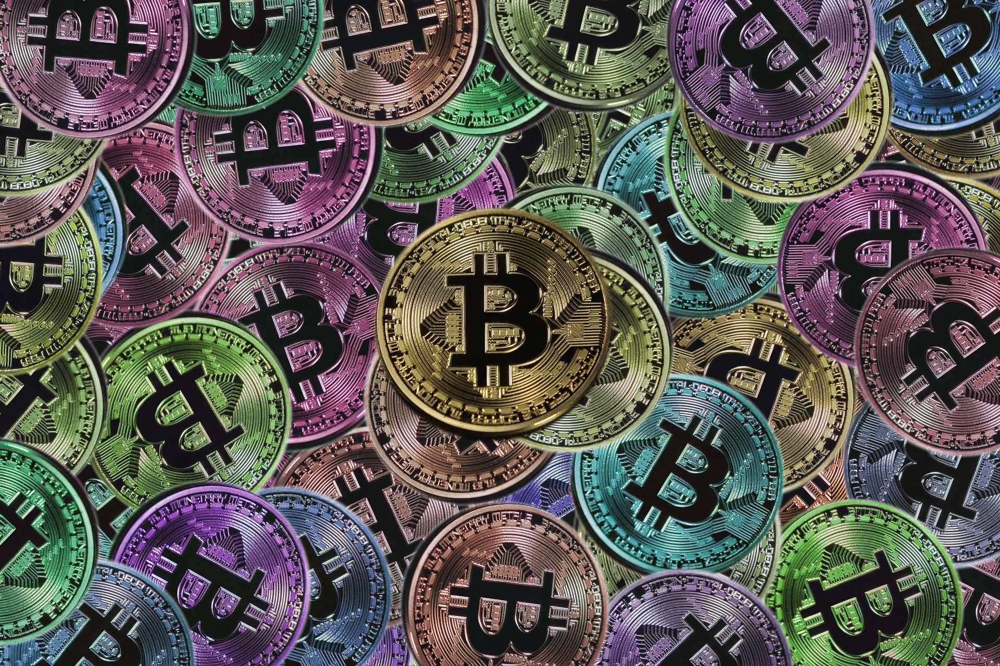
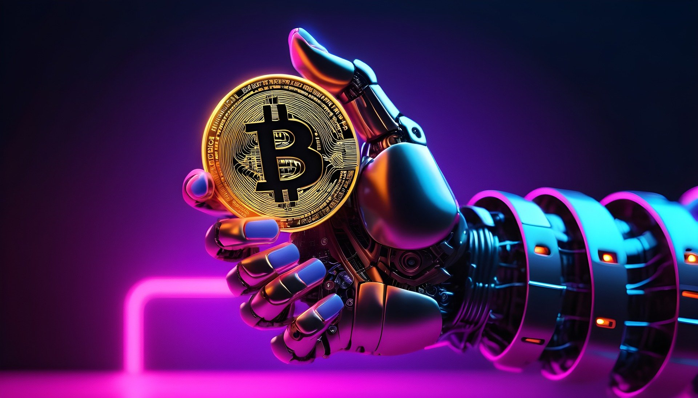

Cryptocurrency

A cryptocurrency crypto-currency, or crypto[a] is a digital currency designed to work through a computer network that is not reliant on any central authority, such as a government or bank, to uphold or maintain it.[2]
Individual coin ownership records are stored in a digital ledger, which is a computerized database using strong cryptography to secure transaction records, control the creation of additional coins, and verify the transfer of coin ownership.
Despite the term that has come to describe many of the fungible blockchain tokens that have been created, cryptocurrencies are not considered to be currencies in the traditional sense, and varying legal treatments have been applied to them in various jurisdicitons, including classification as commodities, securities, and currencies. Cryptocurrencies are generally viewed as a distinct asset class in practice.[6][7][8] Some crypto schemes use validators to maintain the cryptocurrency.
History
In 1983, American cryptographer David Chaum conceived of a type of cryptographic electronic money called ecash.[10][11] Later, in 1995, he implemented it through Digicash,[12] an early form of cryptographic electronic payments. Digicash required user software in order to withdraw notes from a bank and designate specific encrypted keys before they could be sent to a recipient. This allowed the digital currency to be untraceable by a third party.
In 1996, the National Security Agency published a paper entitled How to Make a Mint: The Cryptography of Anonymous Electronic Cash, describing a cryptocurrency system. The paper was first published in an MIT mailing list (October 1996) and later (April 1997) in The American Law Review.[13]

In 1998, Wei Dai described "b-money," an anonymous, distributed electronic cash system.[14] Shortly thereafter, Nick Szabo described bit gold.[15] Like bitcoin and other cryptocurrencies that would follow it, BitGold (not to be confused with the later gold-based exchange BitGold) was described as an electronic currency system that required users to complete a proof of work function with solutions being cryptographically put together and published.
Physical Crypto
Altcoins
Furthur information:
List of Cryptocurrencies
After the early innovation of bitcoin in 2008 and the early network effect gained by bitcoin, tokens, cryptocurrencies, and other digital assets that were not bitcoin became collectively known during the 2010s as alternative cryptocurrencies,[35][36][37] or, "altcoins".[38] Sometimes the term "alt coins" was used,[39][40] or disparagingly, "shitcoins".[41] Paul Vigna of The Wall Street Journal described altcoins in 2020 as "alternative versions of Bitcoin"[42] given its role as the model protocol for cryptocurrency designers. A Polytechnic University of Catalonia thesis in 2021 used a broader description, including not only alternative versions of bitcoin but every cryptocurrency other than bitcoin. "As of early 2020, there were more than 5,000 cryptocurrencies. Altcoin is the combination of two words "alt" and "coin" and includes all alternatives to bitcoin."[38]: 14

Minig
Furthur information:
Physical Crypto
On a blockchain, mining is the validation of transactions. For this effort, successful miners obtain new cryptocurrency as a reward. The reward decreases transaction fees by creating a complementary incentive to contribute to the processing power of the network. The rate of generating hashes, which validate any transaction, has been increased by the use of specialized hardware such as FPGAs and ASICs running complex hashing algorithms like SHA-256 and scrypt.[65] This arms race for cheaper-yet-efficient machines has existed since bitcoin was introduced in 2009.[65] Mining is measured by hash rate, typically in TH/s.[66]
With more people entering the world of virtual currency, generating hashes for validation has become more complex over time, forcing miners to invest increasingly large sums of money to improve computing performance.

Initial Coin offerings
Furthur information:
Crypto
An initial coin offering (ICO) is a controversial means of raising funds for a new cryptocurrency venture. An ICO may be used by startups with the intention of avoiding regulation. However, securities regulators in many jurisdictions, including in the U.S. and Canada, have indicated that if a coin or token is an "investment contract" (e.g., under the Howey test, i.e., an investment of money with a reasonable expectation of profit based significantly on the entrepreneurial or managerial efforts of others), it is a security and is subject to securities regulation. In an ICO campaign, a percentage of the cryptocurrency (usually in the form of "tokens") is sold to early backers of the project in exchange for legal tender or other cryptocurrencies, often bitcoin or Ether.[105][106][107]

Block Chain


A blockchain is a distributed ledger with growing lists of records (blocks) that are securely linked together via cryptographic hashes. Each block contains a cryptographic hash of the previous block, a timestamp, and transaction data (generally represented as a Merkle tree, where data nodes are represented by leaves).
Since each block contains information about the previous block, they effectively form a chain (compare linked list data structure), with each additional block linking to the ones before it. Consequently, blockchain transactions are irreversible in that, once they are recorded, the data in any given block cannot be altered retroactively without altering all subsequent blocks.
Blockchains are typically managed by a peer-to-peer (P2P) computer network for use as a public distributed ledger, where nodes collectively adhere to a consensus algorithm protocol to add and validate new transaction blocks. Although blockchain records are not unalterable, since blockchain forks are possible, blockchains may be considered secure by design and exemplify a distributed computing system with high Byzantine fault tolerance.